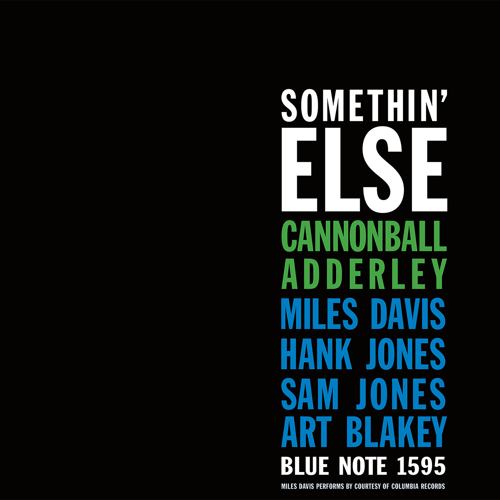
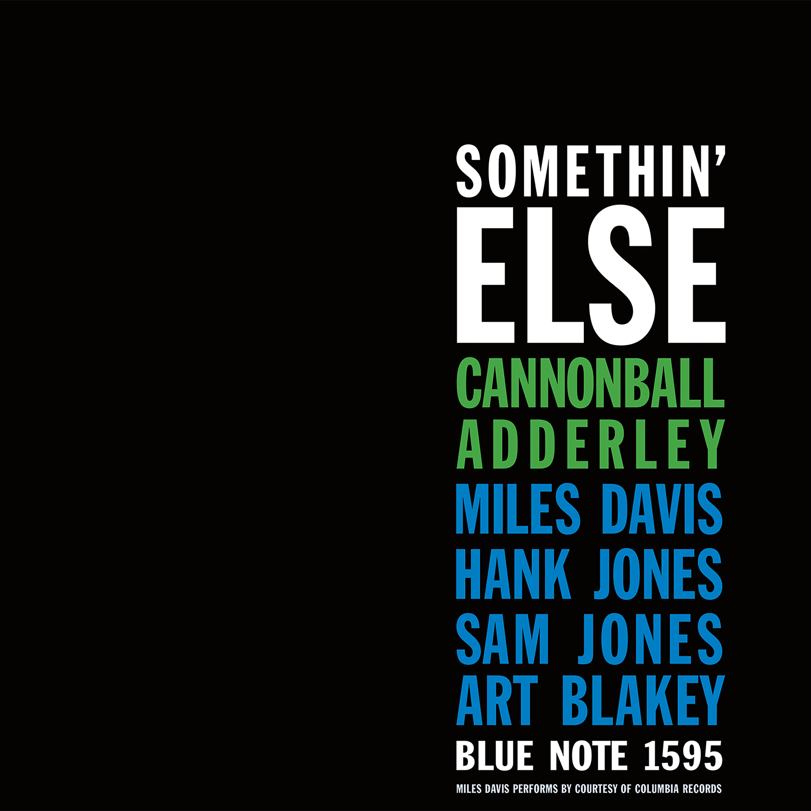

Day 43

Cannonball Adderley et. al. ◆ Autumn Leaves ◆ Somethin’ Else ◆ 1958
“Autumn Leaves” 是首爵士名曲了。结尾的钢琴 bridge 很有趣，像是挤过一层膜来到梦中世界一样。我上 MUSIC 7 的时候期末要写个赏析，我不知道怎么找到篇博客讲了这首，然后就写了它。
我挺喜欢 Cannonball Adderley 萨克斯的音色的，饱满欢快。

Cannonball Adderley et. al. ◆ Autumn Leaves ◆ Somethin’ Else ◆ 1958
“Autumn Leaves” 是首爵士名曲了。结尾的钢琴 bridge 很有趣，像是挤过一层膜来到梦中世界一样。我上 MUSIC 7 的时候期末要写个赏析，我不知道怎么找到篇博客讲了这首，然后就写了它。
我挺喜欢 Cannonball Adderley 萨克斯的音色的，饱满欢快。